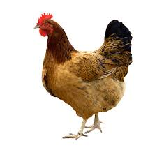
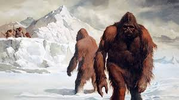

Farm Animals. ... Just like our pets, farm animals are intelligent, social and
depend on people for proper food, shelter and care. Some of the most common farm
animals are pigs, chickens, cows, sheep, goats, horses, donkeys, mules, domestic
ducks, geese and turkeys.

Africa includes two regions of the zoographic area known as
the Paleotropical realm: the Afrotropical region, which comprises
the continent south of the Sahara and the southwestern part of Arabia,
and the Madagascan region. The continent also includes a southern part of
the Palaearctic (Old World) region of the Holarctic realm (i.e., the lands
of the Northern Hemisphere), consisting of northwestern and North Africa south
to roughly the Tropic of Cancer.
intro: As the national animal of the United States,
the majestic bald eagle is a well-known figure around the world.
But interestingly, many other nations – from up-and-coming superpowers
to tiny obscure islands – have placed extinct or never-existed-in-the-first-place
national animals within their pantheon. International destinations specialist
JHRGroup.com brings us this interesting roundup of winged horses,
fire-breathing dragons and other national animals that aren't really real.
